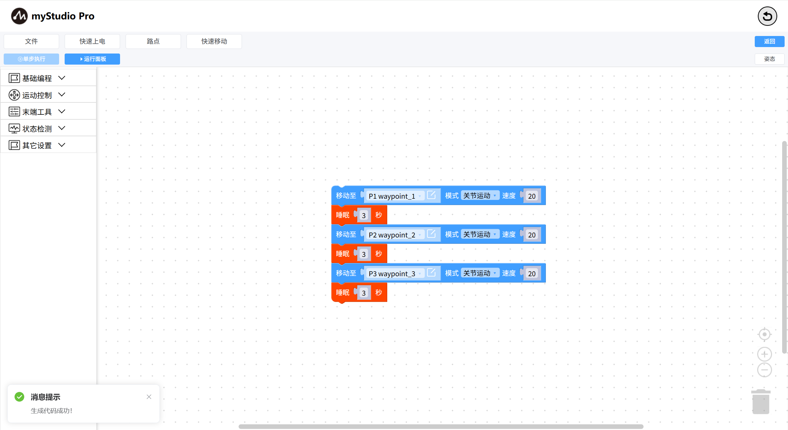

路点
开始之前
1、确保机器已上电
2、确保机器连接正常
3、服务端已开启
本章介绍如何使用路点功能来控制机械臂。
功能描述：通过录入多个路点数据（机械臂的关节和坐标）信息，快速控制机械臂到达每个路点的位置。打开路点列表页面，打开自由移动，放松机械臂，手动调整机械臂姿态，点击新增点位，可以添加一条路点数据。
| 序号 | 说明 |
|---|---|
| 1 | 点击“导入”按钮，可以把之前保存好的路点信息json文件导入进来。 |
| 2 | 点击“导出”按钮，可以把路点信息全部导出合成一个json文件。 |
| 3 | 点击“删除”按钮，可以把当前路点列表中所有选中路点进行删除。 |
| 4 | 点击“复制”按钮，可以把当前所有选中路点进行坐标信息复制操作。 |
| 5 | 点击“重命名”按钮，可以把当前所有选中路点进行路点名重命名。 |
| 6 | 点击“覆盖当前点”按钮，可以把当前机械臂坐标信息快速覆盖所有选中路点的坐标信息。 |
| 7 | 列表数据勾选列，功能3-6以该功能为前提。 |
| 8 | 点击“运行”按钮，机械臂会运动到当前所录的路点位置 |
| 9 | 点击“自由移动”按钮，会弹出二次确认弹窗，点击确认时按钮会变成黄色。机械臂会变成放松状态，调整机械臂的姿态。 |
| 10 | 点击“新增点位”按钮，会录入此时机械臂的坐标信息 |
| 11 | 点击“生成代码”按钮会快速生成路点积木块到blockly程序编码区 |
在blockly中选择路点积木块，加入到程序编码区。或者使用路点列表中的生成代码按钮，会在工作区最后一个积木块上拼接生成的路点积木块。

路点积木块关联路点列表中的数据，选择路点列表中任意路点进行关联。
路点积木块新增点位信息。选择新增点位，点击编辑图标打开新增路点弹框，这时会默认自定义路点名字，通过+或者-进行调整好路点信息，点击保存路点按钮，即可添加路点数据。
此外，路点积木块可对运动的模式进行修改，关节运动模式：以当前路点的关节信息进行运动，直线运动模式：以当前路点坐标信息进行运动。
| 序号 | 说明 |
|---|---|
| 1 | 选择路点，点击编辑图标后，会打开路点编辑弹框 |
| 2 | 输入路点名称 |
| 3 | 显示机械臂的关节和坐标数据，通过按钮左边(-)和右边(+)按钮进行调整路点数据 |
| 4 | 点击保存路点，可以新增或者修改路点数据 |